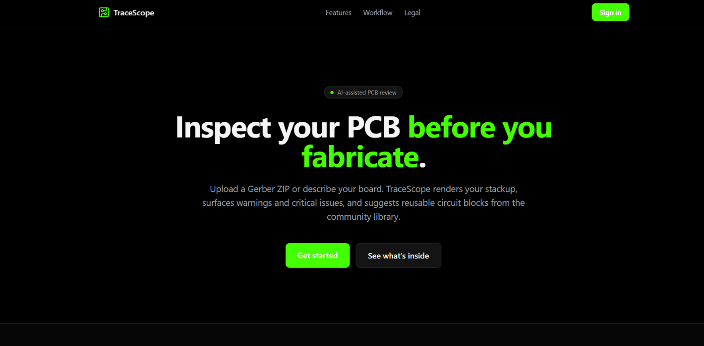
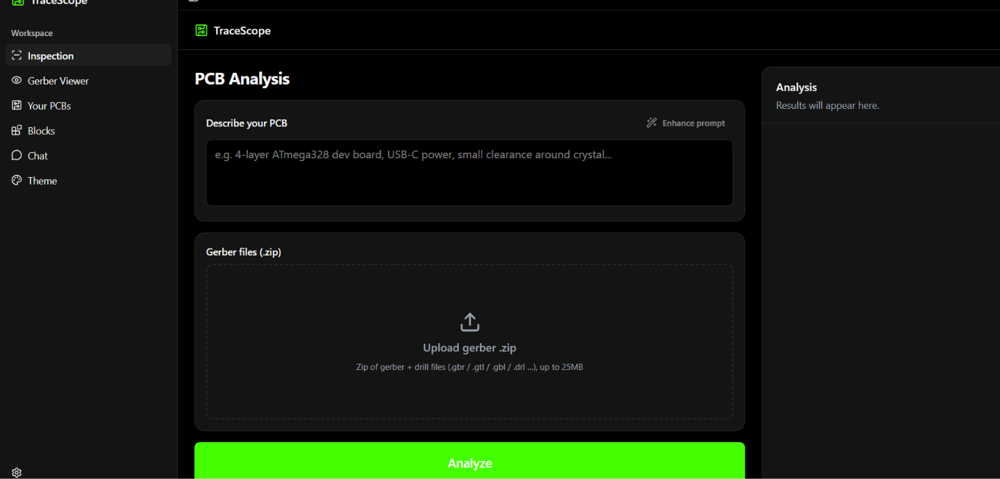
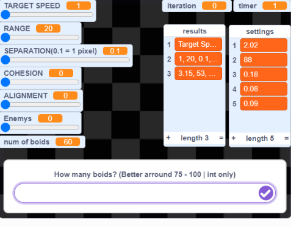

Problem: Standard design-rule checks may miss issues that lead to PCB failures. The project offers another way to review PCB designs before fabrication.
Objective: Build an app that reviews uploaded Gerber files, explains possible failure points and helps users inspect their designs.
2. TOOLS AND TECHNOLOGIES
Hardware, components and materials: A computer and PCB Gerber files supported development.
Software and programming languages: Lovable, AI-assisted analysis, a Gerber viewer, and the Lovable-hosted backend/database.
3. SOLUTION DESIGN AND DEVELOPMENT
Users describe a board, upload Gerber files and run an analysis. The app reports potential issues as warnings or severe problems and places editable arrows over the board to help locate them. Other features include inspection history, a PCB-focused AI chat, a community page, a Gerber viewer and account settings.
4. CHALLENGES AND PROBLEM-SOLVING
The team focused on making issue markers editable and keeping the chatbot focused on PCB questions.
5. TESTING AND RESULTS
The project demonstrates its planned PCB review features and workflow.
6. LESSONS LEARNED AND FUTURE IMPROVEMENTS
The project provided experience building an engineering-focused app with a team at Inspirit AI summer camp.
7. INDIVIDUAL CONTRIBUTIONS AND RESOURCES
This was a group project created at Inspirit AI summer camp using Lovable.
SUPPORTING MATERIALS
[x] Project photographs - three app screenshots are shown below.
[x] Reference links - project PDF and live app.

TraceScope landing page

PCB analysis workflowCircuit block library
Boids
Project name: Boids Date: November 5, 2025 Category: Coding
1. PROBLEM AND OBJECTIVE
Problem: The project explores how flocking settings affect survival in a simulation.
Objective: Build an interactive Boid simulation and test which individual settings and setting combinations affect the number of survivors.
2. TOOLS AND TECHNOLOGIES
Hardware, components and materials: A computer.
Software and programming languages: Scratch, Google Docs or Microsoft Word, Google Sheets or Microsoft Excel, and Photopea. The simulation was built with Scratch blocks.
3. SOLUTION DESIGN AND DEVELOPMENT
The simulation includes an interactive settings program, boids and a predator. The project used a single-variable matrix to test five settings independently at low and high values, then a multi-variable matrix to test 32 combinations. Each simulation loop lasted ten seconds.
4. CHALLENGES AND PROBLEM-SOLVING
Bugs in the predator and in the low/high setting cycles were fixed during development.
5. TESTING AND RESULTS
The single-variable matrix was run three times and the multi-variable matrix ten times. Results were exported for Google Sheets, averaged by setting and graphed.
6. LESSONS LEARNED AND FUTURE IMPROVEMENTS
The project practiced Scratch block coding, debugging, repeated trials and comparing individual settings with combined settings. A useful next step is to compare the strongest findings across settings.
7. INDIVIDUAL CONTRIBUTIONS AND RESOURCES
The project used Scratch, spreadsheet and document tools, and Photopea to create the simulation and analyze test runs.
SUPPORTING MATERIALS
[x] Project photographs - the simulation and settings screen are shown below.
[x] Source code - available through the Scratch project link.
[x] Reference links - project PDF and Scratch simulation.

Boids simulation controls and results panel
Python Mouse
Project name: Python Mouse Date: December 5, 2024 Category: Coding
1. PROBLEM AND OBJECTIVE
Problem: This learning project explored Python and image recognition through an eye-tracking cursor.
Objective: Learn image recognition by tracking the user's eyes and moving the computer cursor to follow them.
2. TOOLS AND TECHNOLOGIES
Hardware, components and materials: A computer, camera and mouse.
Software and programming languages: Python and an image-recognition library, with a tutorial guiding development.
3. SOLUTION DESIGN AND DEVELOPMENT
The project combined camera access, mouse control and an image-recognition library to track the eyes. The cursor then followed the detected eye movement.
4. CHALLENGES AND PROBLEM-SOLVING
The project focused on connecting eye recognition to cursor movement.
5. TESTING AND RESULTS
Testing showed the cursor following eye movement.
6. LESSONS LEARNED AND FUTURE IMPROVEMENTS
The project introduced Python and image recognition. A future version could track cursor accuracy and refine how eye position maps to cursor movement.
7. INDIVIDUAL CONTRIBUTIONS AND RESOURCES
A tutorial supported the project's development and introduced Python-based image recognition.
SUPPORTING MATERIALS
[x] Test results - cursor-following behavior is described, without measurements.